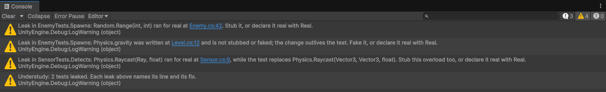

Detect leaks
What a leak is
A leak is an access that ties a test to something outside it. Leak detection watches what the code under test does while the Test Runner runs tests, in every test of the run, including tests that don't use Understudy, so an existing suite can show leaks as soon as Understudy is imported. It reports three kinds:
| Leak | Example | Why it matters |
|---|---|---|
| A call to a non-deterministic member the test didn't declare. | Random.Range, Time.deltaTime, DateTime.Now | The test's result depends on when and where it runs. |
A write to global state the test didn't stub or fake: a static field, a static auto-property, or a Unity static property such as Physics.gravity. | GameManager.score = 0 | The change outlives the test and reaches the next one. |
| A real call to an overload of a member the test replaces. | A stub on Raycast(Vector3, Vector3, float) while the code under test calls Raycast(Ray, float) | The test thinks it controls the member, and doesn't. |
Read a leak warning
Each leak logs a warning in the Console window, once per test for each member and line of the code under test:
Leak in EnemyTests.Spawns: Random.Range(int, int) ran for real at Enemy.cs:42. Stub it, or declare it real with Real.
Leak in EnemyTests.Spawns: Physics.gravity was written at Level.cs:12 and is not stubbed or faked; the change outlives the test. Fake it, or declare it real with Real.
Leak in SensorTests.Detects: Physics.Raycast(Ray, float) ran for real at Sensor.cs:9, while the test replaces Physics.Raycast(Vector3, Vector3, float). Stub this overload too, or declare it real with Real.
Select the file link in the warning to open the line. The warning also shows in the Test Runner window's output for the test, and in the log of a command-line run. After the run, one more line counts the tests that leaked:
Understudy: 2 tests leaked. Each leak above names its line and its fix.Fix a leak
A member the test spies on, stubs, fakes or declares Real never leaks. To fix a leak, choose the one that matches the test's intent:
- Stub the member, when the test depends on its result:
Stub.Method(() => Random.Range(0, 10)).Returns(3). - Declare it
Real, when the test is meant to use the real member:Real.Method(() => Random.Range(Arg.Any<int>(), Arg.Any<int>())). - Fake the static, when the test changes global state:
Fake.Property(() => Physics.gravity, initial: Physics.gravity). A singleton whoseAwakewritesInstance = thisis the most common case: refer to Replace a singleton.
For more information, refer to Run members for real.
Accept a leak in many tests
A Real belongs to the test or fixture that declares it. To accept a leak in every fixture of a
namespace, declare it in an NUnit [SetUpFixture] of that namespace; a setup fixture outside any namespace
covers the whole test assembly:
namespace MyGame.Tests
{
[SetUpFixture]
public class AcceptedLeaks
{
[OneTimeSetUp]
public void Accept() => Real.Property(() => Time.realtimeSinceStartup);
}
}Fail tests on leaks
To make leaks fail their tests, enable Report Leaks as Errors on the Understudy
page of the Project Settings window. Each leak is then logged as an error, and the Test Runner fails a test that logs
an unexpected error. The setting is saved in ProjectSettings/Understudy.json: commit it, so your continuous
integration uses it too. For more
information, refer to Project Settings reference.
Run tests in continuous integration
Run the tests from the command line. Understudy weaves there as in the Editor. With Report Leaks as Errors enabled, a test that leaks fails, and Unity exits with code 2, as for any failed test. Each leak is in the run's log and in its test's output in the results file:
Unity -batchmode -projectPath MyProject -runTests -testPlatform EditMode -testResults results.xmlFor every option, refer to the Test Framework command-line reference.
Declare your own non-deterministic members
Declare the members of your own code or of a library that give a different result between runs, such as a server clock, with an assembly attribute in any assembly that references Understudy:
[assembly: NonDeterministic(typeof(ServerClock), nameof(ServerClock.Now))]The declaration covers every overload of the name, for the whole project. A declaration that names no member of its type logs an error.
Members Understudy declares non-deterministic
| Type | Members |
|---|---|
UnityEngine.Random | Range, value, insideUnitSphere, insideUnitCircle, onUnitSphere, onUnitCircle (Unity 6.3 and later), rotation, rotationUniform, ColorHSV, state |
UnityEngine.Time | time, deltaTime, smoothDeltaTime, unscaledTime, unscaledDeltaTime, fixedTime, fixedUnscaledTime, fixedUnscaledDeltaTime, realtimeSinceStartup, timeSinceLevelLoad, their AsDouble variants, timeAsRational, frameCount, renderedFrameCount |
UnityEngine.Input | The key, button, axis, mouse and touch queries (GetKey, GetButton, GetAxis, GetMouseButton, GetTouch, with their Down, Up and Raw forms), mousePosition, mousePositionDelta, mouseScrollDelta, anyKey, anyKeyDown, inputString, compositionString, imeIsSelected, touchCount, touches, the pen events (GetPenEvent, penEventCount, GetLastPenContactEvent), GetJoystickNames, IsJoystickPreconfigured, the hardware checks (mousePresent, touchSupported, stylusTouchSupported, touchPressureSupported), and the sensors: acceleration, accelerationEvents, accelerationEventCount, GetAccelerationEvent, gyro, compass, location, deviceOrientation |
| Input System devices | current of Keyboard, Mouse, Gamepad, DualShockGamepad, Joystick, Pen, Touchscreen, Pointer and every sensor, and Touch.activeTouches and Touch.activeFingers; the connected devices (InputSystem.devices, disconnectedDevices, GetDevice, GetDeviceById, GetUnsupportedDevices, FindControl, FindControls, metrics); and the Input System's clock, InputState.currentTime and updateCount. Only when the Input System package is installed. |
| System clock and entropy | DateTime.Now, DateTime.UtcNow, DateTime.Today, DateTimeOffset.Now, DateTimeOffset.UtcNow, Environment.TickCount, Stopwatch.GetTimestamp, a stopwatch's Elapsed, ElapsedMilliseconds and ElapsedTicks, Guid.NewGuid, Path.GetRandomFileName, Path.GetTempFileName, RandomNumberGenerator's GetBytes, GetNonZeroBytes, Fill and GetInt32 |
| The machine | The environment (Environment's machine, user, operating system, processor, process, directory, command line, environment variable and NewLine members), the time zone (TimeZoneInfo.Local, ToLocalTime, ToUniversalTime, DateTimeOffset.LocalDateTime), Path.GetTempPath, the screen (Screen.width, height, dpi, currentResolution, resolutions, safeArea, cutouts, orientation, brightness, fullScreen, fullScreenMode, mainWindowDisplayInfo, mainWindowPosition, GetDisplayLayout), and every SystemInfo member |
System.Random isn't declared: a seeded instance gives the same numbers on every run.